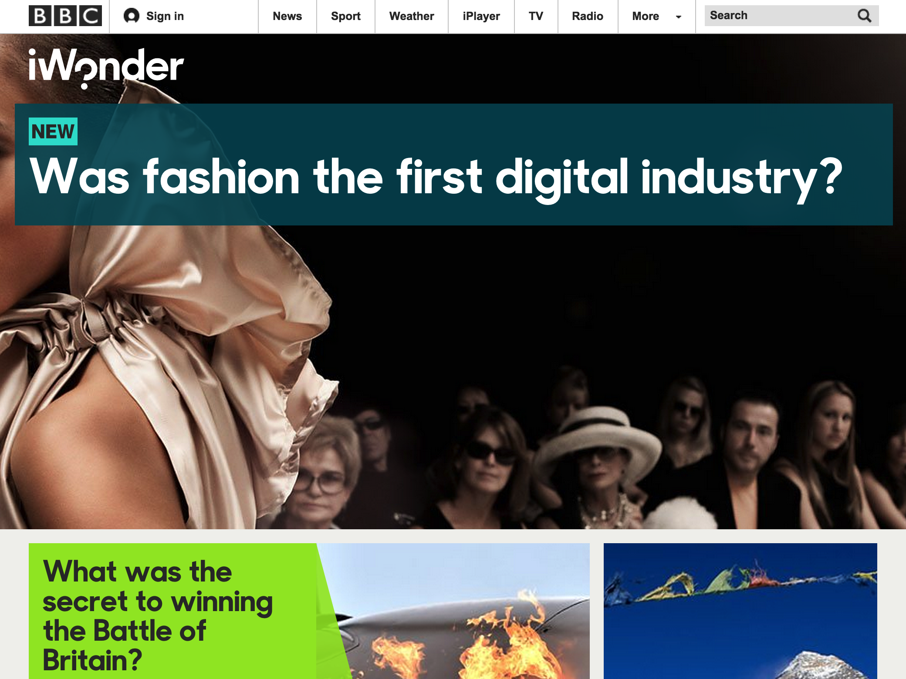

Building BBC iWonder
Modular, responsive, optimal & mobile first!
Created by Jacob Clark / @imjacobclark
About me...
I'm Jacob Clark, a developer for the BBCs Knowledge and Learning department in Salford.
I'm currently working on...
The next version of BBC Food (in the cloud).
I've also previously been involved with the development of BBC iWonder and all other genre portals on the BBC site, from Arts to Make it Digital.
What is iWonder?
An online portal to content across the BBC
Who is our audience?
BBC iWonder has a wide potential audience, from schools browsing on desktop computers to casual learners on tablets and mobiles!
How do we do it?
Due to the potential hundreds of different browsers we support, BBC iWonder needs to be responsive, accessible on a wide variety of platforms from Smartphones to Smart TVs and fast for those slow connections.
BBC iWonder cuts the mustard
Cutting the mustard!
Developing for the lowest comon denominator and enchancing progressivly.

Our stack
BBC iWonder is built with a wide variety of technologies, including:
- PHP
- HTML5
- Sass
- require.js
- Modernizr
How we cut the mustard
Each part of iWonder is built into it's own modular component, we then wire each component up using require.js and cut the mustard accordingly!
- PHP
- HTML5
- Sass
- require.js
- Modernizr